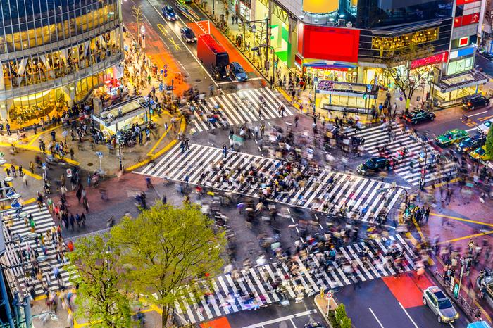

2,5 tys. osób przemierzających skrzyżowanie podczas jednej zmiany świateł? Może się to wydawać nierealne, ale w stolicy Japonii - Tokio, nikogo to nie dziwi. W dzielnicy Shibuya, która słynie z licznych centrów handlowych, modnych butików i kawiarni, znajduje się najbardziej niesamowite skrzyżowanie na świecie. W godzinach szczytu przekracza je na zielonym świetle jednocześnie kilka tysięcy osób! Co ciekawe ten tłok nie dotyczy samochodów, ale pieszych. Ten niezwykły zakątek Tokio stał się jedną z czołowych atrakcji turystycznych miasta.